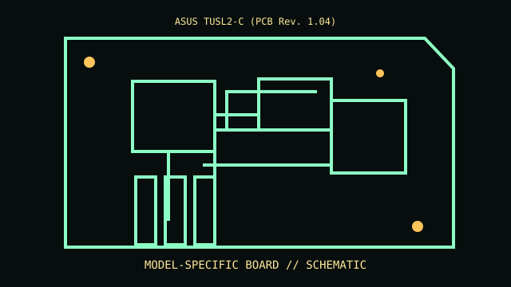

[ MODEL-SPECIFIC COMPONENT // MOTHERBOARDS ]
ASUS TUSL2-C (PCB Rev. 1.04)
A sourced record of one model and its documented revision-specific behavior. Similar model numbers and later board spins are distinct products.

IDENTIFY THE PCB FIRST: Record silkscreen, assembly revision, product suffix and firmware string. Use revision-matched manuals and support lists; verify against the physical board.
Documented specifications
| Exact model / revision | ASUS TUSL2-C (PCB Rev. 1.04) |
|---|---|
| Socket / processor | Socket 370 Pentium III/Celeron only per ASUS CPU list and minimum BIOS. |
| Chipset / architecture | Intel 815EP / ICH2. |
| Memory | Three 168-pin SDRAM DIMMs; type/density/capacity per manual. |
| Form factor | ATX. |
| I/O / expansion | AGP 4x, PCI, CNR, ATA/100, floppy, USB and legacy I/O; options vary. |
| Firmware / boot compatibility | ASUS Award BIOS; FC-PGA/FC-PGA2 support requires listed BIOS. |
Compatibility and revision pitfalls
TUSL2-C differs from TUSL2/CUSL2 and lacks integrated graphics. Use matching BIOS and discrete AGP card; adapter/socket fit is not CPU support.
Before substitution, check exact CPU/SoC support, minimum BIOS/bootloader, memory population, power connectors and chassis requirements. Matching socket or connector alone does not prove compatibility.
Repair and preservation notes
Record BIOS ID/jumpers. Inspect Socket 370, capacitors, AGP latch and battery; verify SDRAM density and processor voltage.
Record provenance, labels, firmware and test conditions. Photograph traces, jumpers and cable routing before repair or cleaning.
Sources & further reading
- ASUS TUSL2-C manual/downloadsOfficial exact-model manual/firmware.
- ASUS TUSL2-C CPU support listManufacturer CPU list and BIOS minima.
Manufacturer manuals, CPU lists and archived technical references form the basis of this record. Revision-specific documents take precedence over family summaries.